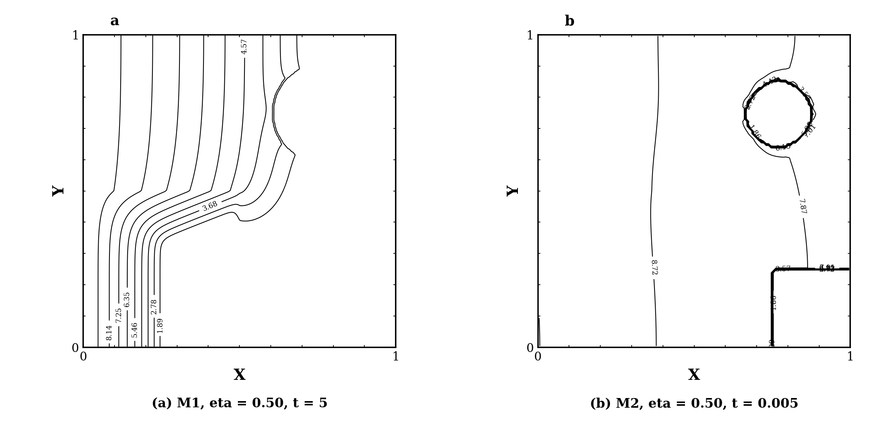

论文 Figure 4
论文 Figure 4 原图请参见原文；公开仓库仅保留本地复现生成图。
该页严格按论文 Figure 4 的 M1/M2 模型、eta、终止时间和等温线数值生成代码对照图。
左侧为论文 Figure 4 的引用说明，右侧为代码生成图。右侧严格使用论文 Figure 4 对应的模型、eta、终止时间和等温线数值： M1 为 eta=0.50、t=5.0；M2 为 eta=0.50、t=0.005。 M1 等温线数值为 1.00、1.89、2.78、3.68、4.57、5.46、6.35、7.25、8.14、9.03； M2 等温线数值为 1.00、1.86、2.72、3.57、4.43、5.29、6.15、7.01、7.87、8.72、9.58。
